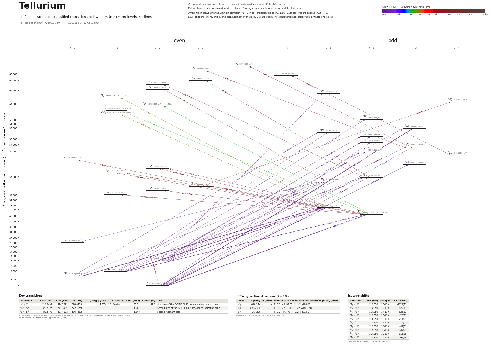

Tellurium energy level diagram
Energy levels and transitions of neutral tellurium (Te I): the 47 strongest classified lines below 2 µm from the NIST Atomic Spectra Database and the 36 levels they connect, each line with its vacuum wavelength, frequency and, for 7 of them, the reduced dipole matrix element derived from the NIST transition rate. Measured lifetimes, transition rates, hyperfine constants and isotope shifts from the literature are included, each with its citation.
Hover a line or a level to isolate it, click to keep it selected. Scroll to zoom, drag to move.

Download: diagram (PDF) diagram (SVG) transitions (CSV) levels (CSV) source code

Key transitions of tellurium
| Transition | λ vac (nm) | λ air (nm) | ν (THz) | |⟨J‖er‖J′⟩| (ea₀) | A (s⁻¹) | Γ/2π up. (MHz) | branch (%) | Use |
|---|---|---|---|---|---|---|---|---|
| 3P2 – 3S°1 | 214.3497 | 214.2822 | 1398.6139 | 1.835 | 2.310e+08 | 51.34 | 71.6 | first step of the ISOLDE RILIS resonance-ionization schem… |
| 3S°1 – 3P1 | 573.5175 | 573.3585 | 522.7259 | – | – | 1.941 | – | second step of the ISOLDE RILIS resonance-ionization sche… |
| 3S°1 – a 5P1 | 591.5770 | 591.4132 | 506.7682 | – | – | 1.243 | – | second resonant step |
λ, ν from NIST level energies unless a measured frequency for this isotope is available. A: measured value or NIST. Γ/2π: natural linewidth of the upper level, 1/(2πτ).
125Te hyperfine structure (I = 1/2)
| Level | A (MHz) | B (MHz) | Shift of each F level from the centre of gravity (MHz) |
|---|---|---|---|
| 3P2 | -998(14) | – | F=3/2: +1497.00 F=5/2: -998.00 |
| 5S°2 | 1010.4(13) | – | F=3/2: -1515.60 F=5/2: +1010.40 |
| 3S°1 | 943(20) | – | F=1/2: -943.00 F=3/2: +471.50 |
Measured A, B constants; sources in the data file.
Isotope shifts
| Transition | λ vac (nm) | Isotopes | Shift (MHz) |
|---|---|---|---|
| 3P2 – 3S°1 | 214.350 | 120-130 | -1029(11) |
| 3P2 – 3S°1 | 214.350 | 122-130 | -829(13) |
| 3P2 – 3S°1 | 214.350 | 124-130 | -625(13) |
| 3P2 – 3S°1 | 214.350 | 126-130 | -426(11) |
| 3P2 – 3S°1 | 214.350 | 128-130 | -211(11) |
| 3P2 – 3S°1 | 214.350 | 132-130 | 214(15) |
| 3P2 – 3S°1 | 214.350 | 134-130 | 402(15) |
| 3P2 – 3S°1 | 214.350 | 136-130 | 1242(21) |
| 3P2 – 3S°1 | 214.350 | 123-130 | -815(15) |
| 3P2 – 3S°1 | 214.350 | 125-130 | -594(19) |
Shift = ν(first isotope) − ν(second isotope).
Listed Te transitions below 2 µm
| Lower level | Upper level | λ vacuum (nm) | λ air (nm) | ν (THz) | Type | |⟨J‖er‖J′⟩| (ea₀) | A (s⁻¹) | Branching (%) | Source of matrix element / A |
|---|---|---|---|---|---|---|---|---|---|
| 3P2 | 3D°3 | 169.9901 | – | 1763.5876 | E1 | 2.631 NIST | 4.080e+08 NIST | – | NIST ASD (accuracy n/a) |
| 3P1 | 3P°2 | 170.8055 | – | 1755.1682 | E1 | – | – | – | – |
| 3P2 | 1D°2 | 175.0878 | – | 1712.2408 | E1 (intercombination) | – | – | – | – |
| 3P2 | 3D°3 | 175.9246 | – | 1704.0964 | E1 | – | – | – | – |
| 3P2 | 5D°3 | 179.6050 | – | 1669.1761 | E1 (intercombination) | – | – | – | – |
| 3P2 | 3D°2 | 182.2155 | – | 1645.2631 | E1 | – | – | – | – |
| 3P0 | 3D°1 | 185.0496 | – | 1620.0658 | E1 | – | – | – | – |
| 3P1 | 3D°1 | 185.2011 | – | 1618.7402 | E1 | – | – | – | – |
| 3P1 | 3D°2 | 185.7296 | – | 1614.1342 | E1 | – | – | – | – |
| 1D2 | 1P°1 | 186.0456 | – | 1611.3923 | E1 | – | – | – | – |
| 3P1 | 3D°2 | 199.4839 | – | 1502.8403 | E1 | – | – | – | – |
| 3P0 | 3D°1 | 200.0905 | 200.0257 | 1498.2845 | E1 | – | – | – | – |
| 3P1 | 3D°1 | 200.2677 | 200.2029 | 1496.9589 | E1 | – | – | – | – |
| 1D2 | 3D°3 | 207.1720 | 207.1059 | 1447.0704 | E1 (intercombination) | – | – | – | – |
| 1D2 | 3D°2 | 208.1835 | 208.1172 | 1440.0398 | E1 (intercombination) | – | – | – | – |
| 3P2 | 3S°1 | 214.3497 | 214.2822 | 1398.6139 | E1 | 1.835 measured | 2.310e+08 measured | 71.6 | Roederer, Lawler, Cowan, et al., Astrophys. J. Lett. 747, L8 (2012), arXiv:1202.2378, Tab… |
| 1D2 | 1D°2 | 214.7936 | 214.7260 | 1395.7236 | E1 | – | – | – | – |
| 1D2 | 3D°3 | 216.0543 | 215.9864 | 1387.5792 | E1 (intercombination) | – | – | – | – |
| 1D2 | 5D°2 | 220.9484 | 220.8795 | 1356.8437 | E1 (intercombination) | – | – | – | – |
| 1D2 | 3D°2 | 225.6206 | 225.5507 | 1328.7459 | E1 (intercombination) | – | – | – | – |
| 3P2 | 5S°2 | 225.9734 | 225.9034 | 1326.6716 | E1 (intercombination) | 0.604 NIST | 1.280e+07 NIST | 91.9 | NIST ASD (accuracy n/a) |
| 1D2 | 3D°1 | 226.6237 | 226.5536 | 1322.8645 | E1 (intercombination) | – | – | – | – |
| 3P0 | 3S°1 | 238.4004 | 238.3277 | 1257.5167 | E1 | 0.776 measured | 3.000e+07 measured | 9.3 | Roederer, Lawler, Cowan, et al., Astrophys. J. Lett. 747, L8 (2012), arXiv:1202.2378, Tab… |
| 3P1 | 3S°1 | 238.6519 | 238.5792 | 1256.1911 | E1 | 1.099 measured | 6.000e+07 measured | 18.6 | Roederer, Lawler, Cowan, et al., Astrophys. J. Lett. 747, L8 (2012), arXiv:1202.2378, Tab… |
| 3P1 | 5S°2 | 253.1499 | 253.0738 | 1184.2488 | E1 (intercombination) | 0.209 NIST | 1.090e+06 NIST | 7.83 | NIST ASD (accuracy n/a) |
| 1D2 | 3S°1 | 277.0477 | 276.9660 | 1082.0967 | E1 (intercombination) | 0.168 measured | 9.000e+05 measured | 0.28 | Roederer, Lawler, Cowan, et al., Astrophys. J. Lett. 747, L8 (2012), arXiv:1202.2378, Tab… |
| 1S0 | 3D°1 | 317.6066 | 317.5147 | 943.9114 | E1 (intercombination) | – | – | – | – |
| 5S°2 | 3P2 | 508.4276 | 508.2859 | 589.6463 | E1 (intercombination) | – | – | – | – |
| 5S°2 | b 5P1 | 515.0141 | 514.8707 | 582.1053 | E1 | – | – | – | – |
| 3S°1 | 3P1 | 573.5175 | 573.3585 | 522.7259 | E1 | – | – | – | – |
| 3S°1 | a 5P1 | 591.5770 | 591.4132 | 506.7682 | E1 (intercombination) | – | – | – | – |
| 5S°2 | 3P2 | 876.0589 | 875.8183 | 342.2058 | E1 (intercombination) | – | – | – | – |
| 5S°2 | 3P1 | 900.6841 | 900.4369 | 332.8497 | E1 (intercombination) | – | – | – | – |
| 3P2 | 1D2 | 947.1601 | 946.9003 | 316.5172 | M1+E2 | – | – | – | – |
| 5S°2 | 5P3 | 972.5408 | 972.2741 | 308.2570 | E1 | – | – | – | – |
| 3D°3 | 3F4 | 987.1623 | 986.8916 | 303.6912 | E1 | – | – | – | – |
| 3D°2 | 3F3 | 995.9028 | 995.6298 | 301.0258 | E1 | – | – | – | – |
| 3D°2 | 3D2 | 997.9864 | 997.7128 | 300.3974 | E1 | – | – | – | – |
| 5S°2 | 5P2 | 1005.4170 | 1005.1414 | 298.1772 | E1 | – | – | – | – |
| 5S°2 | 5P1 | 1009.3777 | 1009.1011 | 297.0072 | E1 | – | – | – | – |
| 5D°4 | 5F5 | 1010.8821 | 1010.6051 | 296.5652 | E1 | – | – | – | – |
| 3D°1 | 3F2 | 1012.0850 | 1011.8076 | 296.2127 | E1 | – | – | – | – |
| 3D°3 | 3D3 | 1030.3382 | 1030.0559 | 290.9651 | E1 | – | – | – | – |
| 5P3 | 5D°4 | 1049.6448 | 1049.3573 | 285.6132 | E1 | – | – | – | – |
| 3S°1 | 3P0 | 1092.1330 | 1091.8339 | 274.5018 | E1 | – | – | – | – |
| 3S°1 | 3P2 | 1109.2599 | 1108.9562 | 270.2635 | E1 | – | – | – | – |
| 3S°1 | 3P1 | 1149.0378 | 1148.7233 | 260.9074 | E1 | – | – | – | – |
Reduced dipole matrix elements follow the convention A = ω³|d|²/(3πε₀ħc³(2J′+1)), with J′ the upper level. Tags show where a number comes from: measured, NIST compilation, high-accuracy theory, or a model calculation.
Te energy levels
| Level | Energy (cm⁻¹) | J | Parity | Lifetime | gJ | Hyperfine A (MHz) | Hyperfine B (MHz) | Lifetime source | Hyperfine source |
|---|---|---|---|---|---|---|---|---|---|
| 3P2 | 0.000 | 2 | even | stable | 1.46 | -998 | – | – | R. Sifi, PhD thesis, Universite Paris-Sud / IPN Orsay (2007), 'Ionisation resonante par f… |
| 3P0 | 4706.495 | 0 | even | – | – | – | – | – | – |
| 3P1 | 4750.712 | 1 | even | – | 1.514 | – | – | – | – |
| 1D2 | 10557.877 | 2 | even | – | 1.037 | – | – | – | – |
| 1S0 | 23198.392 | 0 | even | – | – | – | – | – | – |
| 5S°2 | 44253.000 | 2 | odd | 71.8 ns measured | 1.96 | 1010.4 | – | Garpman, Lido, Rydberg, Svanberg, Z. Phys. 247, 238 (1971) (optical double resonance and … | Garpman, Svanberg, Phys. Scr. 5, 213 (1972) (optical double resonance and level crossing … |
| 3S°1 | 46652.738 | 1 | odd | 3.1 ns measured | 1.909 | 943 | – | Bengtsson, Berzinsh, Larsson, Svanberg, Z. Phys. D 23, 29 (1992), abstract and p. 30, Tab… | R. Sifi, PhD thesis, Universite Paris-Sud / IPN Orsay (2007), 'Ionisation resonante par f… |
| 5P1 | 54160.094 | 1 | even | – | 2.388 | – | – | – | – |
| 5P2 | 54199.122 | 2 | even | – | 1.762 | – | – | – | – |
| 5P3 | 54535.345 | 3 | even | – | 1.636 | – | – | – | – |
| 3D°1 | 54683.886 | 1 | odd | – | 0.674 | – | – | – | – |
| 3D°2 | 54880.070 | 2 | odd | – | 1.224 | – | – | – | – |
| 3P1 | 55355.672 | 1 | even | – | 1.504 | – | – | – | – |
| 3P2 | 55667.758 | 2 | even | – | 1.496 | – | – | – | – |
| 5D°3 | 55677.722 | 3 | odd | – | – | – | – | – | – |
| 3P0 | 55809.132 | 0 | even | – | – | – | – | – | – |
| 5D°4 | 55816.219 | 4 | odd | – | 1.47 | – | – | – | – |
| 5D°2 | 55817.311 | 2 | odd | – | 1.428 | – | – | – | – |
| 3D°3 | 56842.538 | 3 | odd | – | 1.352 | – | – | – | – |
| 1D°2 | 57114.206 | 2 | odd | – | 1.08 | – | – | – | – |
| 3D°2 | 58592.434 | 2 | odd | – | 1.112 | – | – | – | – |
| 3D°1 | 58746.074 | 1 | odd | – | 0.532 | – | – | – | – |
| 3D°3 | 58826.951 | 3 | odd | – | 1.31 | – | – | – | – |
| 3P°2 | 63296.823 | 2 | odd | – | 1.456 | – | – | – | – |
| a 5P1 | 63556.707 | 1 | even | 128 ns measured | 1.704 | – | – | Zerne, Berzinsh, Svanberg, Z. Phys. D 32, 31 (1994), abstract (p. 31) and p. 32 (first tw… | – |
| b 5P1 | 63669.944 | 1 | even | 99 ns measured | 1.764 | – | – | Zerne, Berzinsh, Svanberg, Z. Phys. D 32, 31 (1994), abstract (p. 31) and p. 32: level ca… | – |
| 3P2 | 63921.485 | 2 | even | 124 ns measured | 1.47 | – | – | Zerne, Berzinsh, Svanberg, Z. Phys. D 32, 31 (1994) (two-step pulsed-laser excitation of … | – |
| 5D°4 | 64062.377 | 4 | odd | – | 1.48 | – | – | – | – |
| 3P1 | 64088.997 | 1 | even | 82 ns measured | 1.235 | – | – | Zerne, Berzinsh, Svanberg, Z. Phys. D 32, 31 (1994) (two-step pulsed-laser excitation of … | – |
| 1P°1 | 64308.139 | 1 | odd | – | – | – | – | – | – |
| 3F2 | 64564.479 | 2 | even | – | 0.815 | – | – | – | – |
| 3D2 | 64900.247 | 2 | even | – | 1.206 | – | – | – | – |
| 3F3 | 64921.211 | 3 | even | – | 1.111 | – | – | – | – |
| 5F5 | 65708.569 | 5 | even | – | 1.39 | – | – | – | – |
| 3D3 | 66548.089 | 3 | even | – | 1.173 | – | – | – | – |
| 3F4 | 66972.585 | 4 | even | – | 1.25 | – | – | – | – |
Te⁺ ionisation limit 72669.01 cm⁻¹ = 9.00981 eV (137.610 nm)
Sources
- Bengtsson, Berzinsh, Larsson, Svanberg, Z. Phys. D 23, 29 (1992), abstract and p. 30, Tab…
- Garpman, Lido, Rydberg, Svanberg, Z. Phys. 247, 238 (1971) (optical double resonance and …
- Garpman, Svanberg, Phys. Scr. 5, 213 (1972) (optical double resonance and level crossing …
- NIST ASD
- NIST ASD level energies
- R. Sifi, PhD thesis, Universite Paris-Sud / IPN Orsay (2007), 'Ionisation resonante par f…
- R. Sifi, PhD thesis, Universite Paris-Sud / IPN Orsay (2007), 'Ionisation resonante par f…
- Roederer, Lawler, Cowan, et al., Astrophys. J. Lett. 747, L8 (2012), arXiv:1202.2378, Tab…
- Zerne, Berzinsh, Svanberg, Z. Phys. D 32, 31 (1994) (two-step pulsed-laser excitation of …
- Zerne, Berzinsh, Svanberg, Z. Phys. D 32, 31 (1994), abstract (p. 31) and p. 32 (first tw…
- Zerne, Berzinsh, Svanberg, Z. Phys. D 32, 31 (1994), abstract (p. 31) and p. 32: level ca…
Thin file: neutral Te has little modern precision spectroscopy in open sources. The three lifetimes come from an abstract (OSTI/ETDEWEB record of Z. Phys. D 32, 31), read through an automated page reader and not checked against the printed paper. NIST carries A values for six 5p4 - 5p3 6s lines (Ubelis & Berzinsh); nothing better was found. Abundances: NIST isotopic compositions (120Te 0.09(1) %, 130Te 34.08(62) %). Third pass (2026-10-02): added the 6s 3S1 and 6s 5S2 lifetimes, the a 5P1 lifetime (identified through the excitation wavelengths printed on p. 32 of Zerne et al.), 123,125Te hyperfine constants and the 214 nm isotope shifts of 120-136Te from the open PhD thesis of R. Sifi (HAL tel-00252001, saved as pdf/Te_Sifi_2007.pdf). In that thesis A is the ground-level constant and A' the 6s 3S1 constant; isotope shifts are nu(A) - nu(130). Extra fields beyond SCHEMA.md: oscillator_strength_abs, isotope_shift_note, lifetime_alternatives.
Atoms with measured data
- Lithium-632 levels, 85 lines
- Lithium-732 levels, 85 lines
- Beryllium-917 levels, 26 lines
- Sodium-2336 levels, 106 lines
- Magnesium-2418 levels, 61 lines
- Magnesium-2518 levels, 61 lines
- Potassium-3934 levels, 84 lines
- Potassium-4034 levels, 84 lines
- Potassium-4134 levels, 84 lines
- Calcium-4035 levels, 61 lines
- Calcium-4335 levels, 61 lines
- Rubidium-8536 levels, 94 lines
- Rubidium-8736 levels, 94 lines
- Strontium-8740 levels, 70 lines
- Strontium-8840 levels, 70 lines
- Caesium-13331 levels, 79 lines
- Barium-13744 levels, 89 lines
- Barium-13844 levels, 89 lines
- Dysprosium-16339 levels, 55 lines
- Dysprosium-16439 levels, 55 lines
- Ytterbium-17118 levels, 26 lines
- Ytterbium-17418 levels, 26 lines